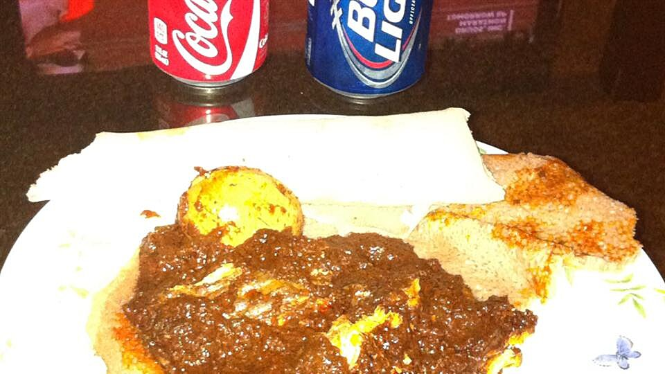

Doro Wat

Ethiopian chicken stew
One of the best Ethiopian food that is prepared and served carefully. made with chicken, onion, pepper and
spicies.
Ingredients
- 1 (3 pound) whole chicken, including neck and giblets, cut into 1-inch pieces
- 2 pcups water (Optional)
- 1/4 cup lemon juice
- 3 cups chopped Bermuda onion
- 3 tablespoons butter
- 1/2 teaspoon cayenne pepper
- 1 teaspoon paprika
- 1/2 teaspoon ground black pepper
- 1/4 teaspoon ground ginger
- 1 cup water, or as needed (Optional)
- 2 tablespoons all-purpose flour (Optional)
- 2 tablespoons water (Optional)
- 8 hard-boiled eggs, peeled